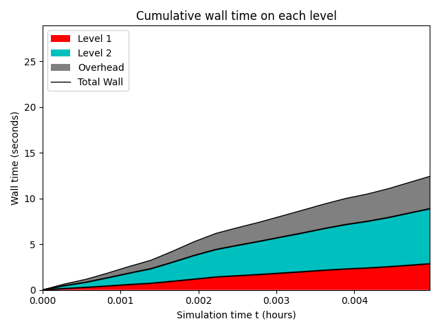
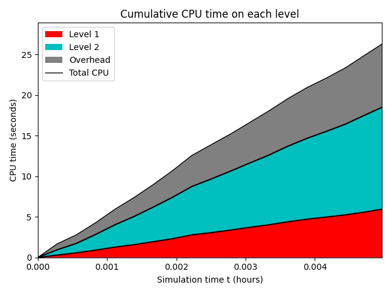
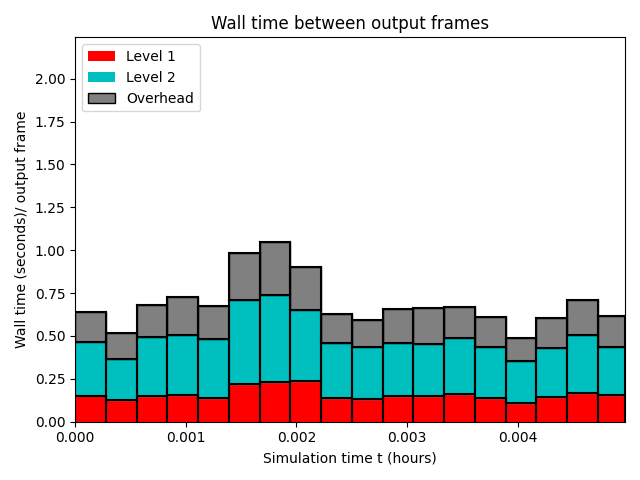
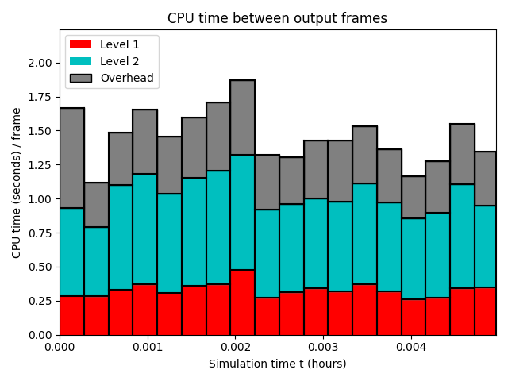
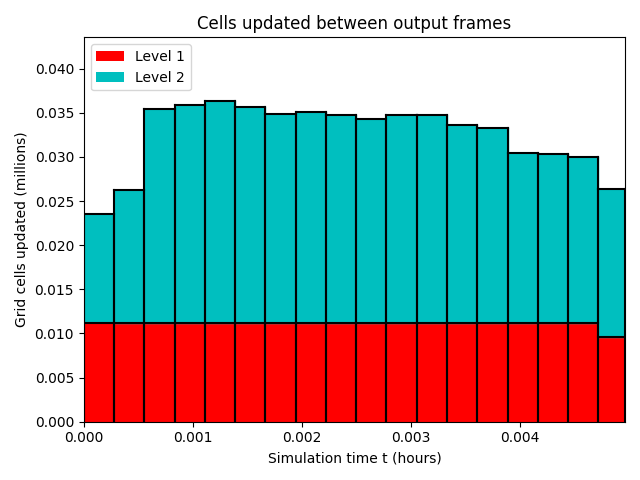
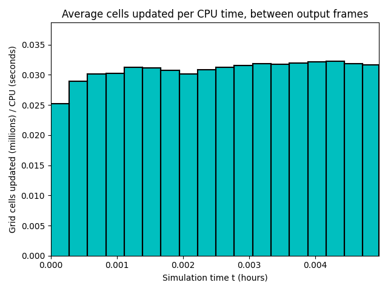

Datetime: 2024-06-09 19:10 From: /home/axel/Documents/EPFL/PDM/Trift/TriftGeoclaw/AVAC/_output
============================== Timing Data ==============================
Integration Time (stepgrid + BC + overhead)
Level Wall Time (seconds) CPU Time (seconds) Total Cell Updates
1 2.861 5.940 0.200E+06
2 6.006 12.535 0.385E+06
total 8.867 18.475 0.585E+06
All levels:
stepgrid 4.769 10.221
BC/ghost cells 4.055 8.167
Regridding 1.325 2.694
Output (valout) 0.184 0.289
Total time: 12.410 25.918
Using 4 thread(s)
Note: The CPU times are summed over all threads.
Total time includes more than the subroutines listed above
Note: timings are also recorded for each output step
in the file timing.csv.
clock_rate = 1000000000 per second, count_max = 9223372036854775807
clock_start = 30715186281590, clock_finish = 30727596679372
=========================================================================


  
